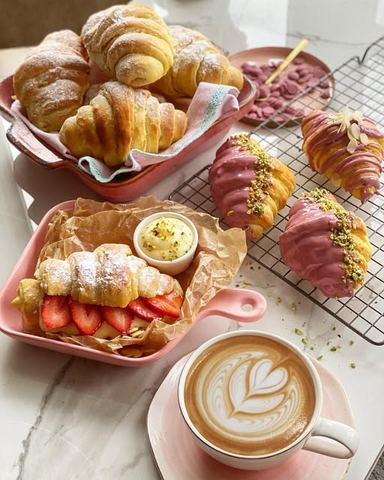

Moja beleška
SačuvanoSastojci
- Sastojci
Priprema
Sjediniti toplo mleko i vodu, tome dodati kašičicu šećera, kašičicu brašna i 1 suvi kvasac, promešati i sačekati 10ak minuta da nadodje kvasac. U drugoj posudi umutiti 2 jaja sa kašičicom soli i šećera i dodati 50 ml ulja, tome dodati trećinu brašna, sipati nadosli kvasac i dodavati brašno. Umesiti testo koje se ne lepi. Ostaviti da na toplom mestu pokriveno da odstoji oko 45 minuta. Na pobrasnjenoj podlozi premestiti i testo podeliti na 8 jednakih delova. Od svakog dela formirati lopticu i razvuci veličine tanjira. Preko svakog dela testa sem poslednjeg narendati puter i sada se oklagijom razvuče jedan ogroman krug debljine oko 1 cm i manje, pa ga podeliti na 16 trouglova od kojih ćete dobiti 16 kroasana. Dok rolate kroasane pomalo povlačite testo kako bi se dodatno tanjilo i bilo što razrudjenije nakon pečenja. Premažite ih 1 žumancetom umućenim sa malo mleka i neka u plehu odstoje dodatnih 30 minuta. Peku se u zagrejanoj rerni na 220C 15 minuta. Mogu se puniti po želji, ali moj savet je da ih ostavite prazne pa posle pečenja svaki možete preseći po duziti i puniti po želji. Ili umakati u omiljenu čokoladu. Koja bi bila vaša omiljena kombinacija..? Punjeni vanil filom i svežim jagodama, posuti šećerom u prahu ili umočeni u ruby čokoladu pa posuti pistaćima? Jaaao, muke.. 🥐🌸🌸
Originalni opis sa Instagrama
Domaći kroasani 🥐🌸 Mnogo sam ponosna na ove moje domaće kroasančiće🙈 Zar nisu preslatki...? 💓💓💓 Bez aditiva i veštačkih boja, homemade varijanta, a ja se osećam kao da sedim u nekoj ušuškanoj, slatkoj pekarici ili nekom finom kaficu, ispijam omiljeni cappuccino i jedem roze kroasan 🌸🌸🌸 Ispunila sam sama sebi želju 💓 Sastojci: •200 ml toplog mleka •200 ml tople vode •1 suvi kvasac •2 kašičice šećera •1 kašičica soli •2 jaja +1 žumance i malo mleka •50 ml ulja •700 gr mekog brašna tip 400 •125 gr putera Sjediniti toplo mleko i vodu, tome dodati kašičicu šećera, kašičicu brašna i 1 suvi kvasac, promešati i sačekati 10ak minuta da nadodje kvasac. U drugoj posudi umutiti 2 jaja sa kašičicom soli i šećera i dodati 50 ml ulja, tome dodati trećinu brašna, sipati nadosli kvasac i dodavati brašno. Umesiti testo koje se ne lepi. Ostaviti da na toplom mestu pokriveno da odstoji oko 45 minuta. Na pobrasnjenoj podlozi premestiti i testo podeliti na 8 jednakih delova. Od svakog dela formirati lopticu i razvuci veličine tanjira. Preko svakog dela testa sem poslednjeg narendati puter i sada se oklagijom razvuče jedan ogroman krug debljine oko 1 cm i manje, pa ga podeliti na 16 trouglova od kojih ćete dobiti 16 kroasana. Dok rolate kroasane pomalo povlačite testo kako bi se dodatno tanjilo i bilo što razrudjenije nakon pečenja. Premažite ih 1 žumancetom umućenim sa malo mleka i neka u plehu odstoje dodatnih 30 minuta. Peku se u zagrejanoj rerni na 220C 15 minuta. Mogu se puniti po želji, ali moj savet je da ih ostavite prazne pa posle pečenja svaki možete preseći po duziti i puniti po želji. Ili umakati u omiljenu čokoladu. Koja bi bila vaša omiljena kombinacija..? Punjeni vanil filom i svežim jagodama, posuti šećerom u prahu ili umočeni u ruby čokoladu pa posuti pistaćima? Jaaao, muke.. 🥐🌸🌸 • • • #kroasani #domacikroasani #homemadecroassants #domacepecivo #kodkućejeslađe #mojabajka #mojamastasmisljasvasta #zadovoljnahr #rubycallebaut #rubychocolatecroissant